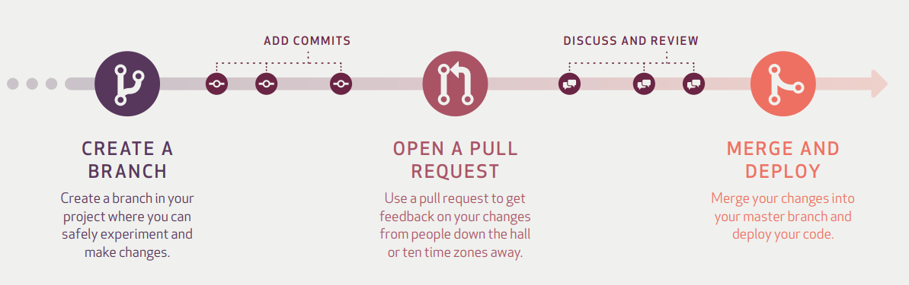

1. Git & Github¶
1.1. 基本概念¶
- Github
GitHub is a code hosting platform for version control and collaboration
- Repository
存放项目代码; 一个Repository对应一个项目
- Branch
Branching is the way to work on different versions of a repository at one time
experiment and make edits before committing them to master

- commits
saved changes
Each commit has an associated commit message, which is a description explaining why a particular change was made
- Pull Request
proposing your changes and requesting that someone review and pull in your contribution and merge them into their branch
- Merge
merge branch into master branch, and delete the branch
- Star
收藏
- Fork
克隆项目以便于独立开发
- Watch
关注; 有更新时会受到通知
- Issue
问题
1.2. Version Control System (VCS)¶
project history: - Which changes were made? - Who made the changes? - When were the changes made? - Why were changes needed?
Distributed version control system (DVCS)¶
Unlike once popular centralized version control systems, DVCSs like Git don’t need a constant connection to a central repository. Developers can work anywhere and collaborate asynchronously from any time zone
1.3. Git commands¶
git init
initializes a brand new Git repository and begins tracking an existing directory. It adds a hidden subfolder within the existing directory that houses the internal data structure required for version control.
git clone
creates a local copy of a project that already exists remotely. The clone includes all the project’s files, history, and branches.
git add
stages a change. Git tracks changes to a developer’s codebase, but it’s necessary to stage and take a snapshot of the changes to include them in the project’s history. This command performs staging, the first part of that two-step process. Any changes that are staged will become a part of the next snapshot and a part of the project’s history. Staging and committing separately gives developers complete control over the history of their project without changing how they code and work.
git commit
saves the snapshot to the project history and completes the change-tracking process. In short, a commit functions like taking a photo. Anything that’s been staged with git add will become a part of the snapshot with git commit.
git status
shows the status of changes as untracked, modified, or staged.
git branch
shows the branches being worked on locally.
git merge
merges lines of development together. This command is typically used to combine changes made on two distinct branches. For example, a developer would merge when they want to combine changes from a feature branch into the master branch for deployment.
git pull
updates the local line of development with updates from its remote counterpart. Developers use this command if a teammate has made commits to a branch on a remote, and they would like to reflect those changes in their local environment.
git push
updates the remote repository with any commits made locally to a branch.
For more details: https://git-scm.com/docs
1.4. The GitHub flow¶
Create a branch: Topic branches created from the canonical deployment branch (usually master) allow teams to contribute to many parallel efforts. Short-lived topic branches, in particular, keep teams focused and results in quick ships.
Add commits: Snapshots of development efforts within a branch create safe, revertible points in the project’s history.
Open a pull request: Pull requests publicize a project’s ongoing efforts and set the tone for a transparent development process.
Discuss and review code: Teams participate in code reviews by commenting, testing, and reviewing open pull requests. Code review is at the core of an open and participatory culture.
Merge: Upon clicking merge, GitHub automatically performs the equivalent of a local ‘git merge’ operation. GitHub also keeps the entire branch development history on the merged pull request.
Deploy: Teams can choose the best release cycles or incorporate continuous integration tools and operate with the assurance that code on the deployment branch has gone through a robust workflow.
1.5. Models for collaborative development¶
Shared repository (适合个人或团队)
Fork and pull (适合开源项目, 难以控制权限时)